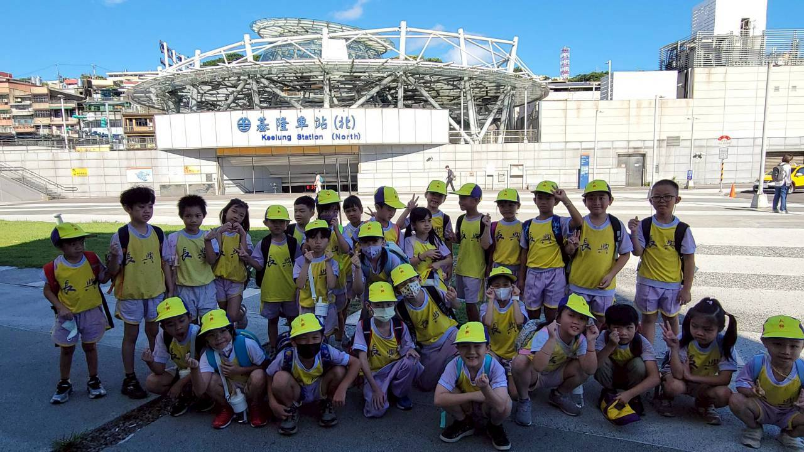
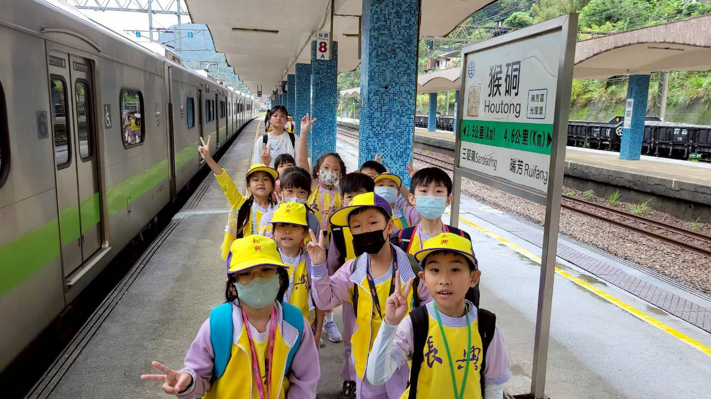
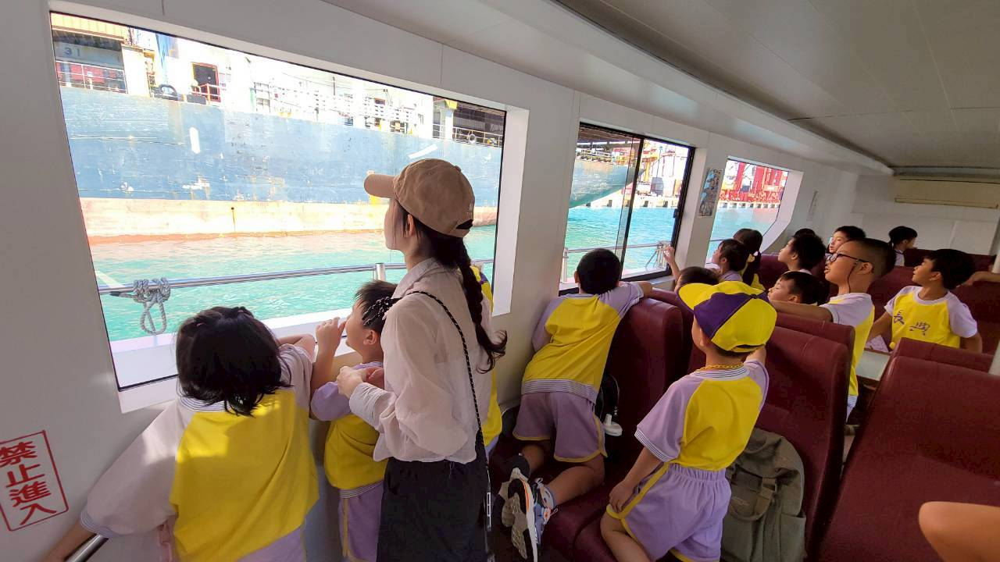
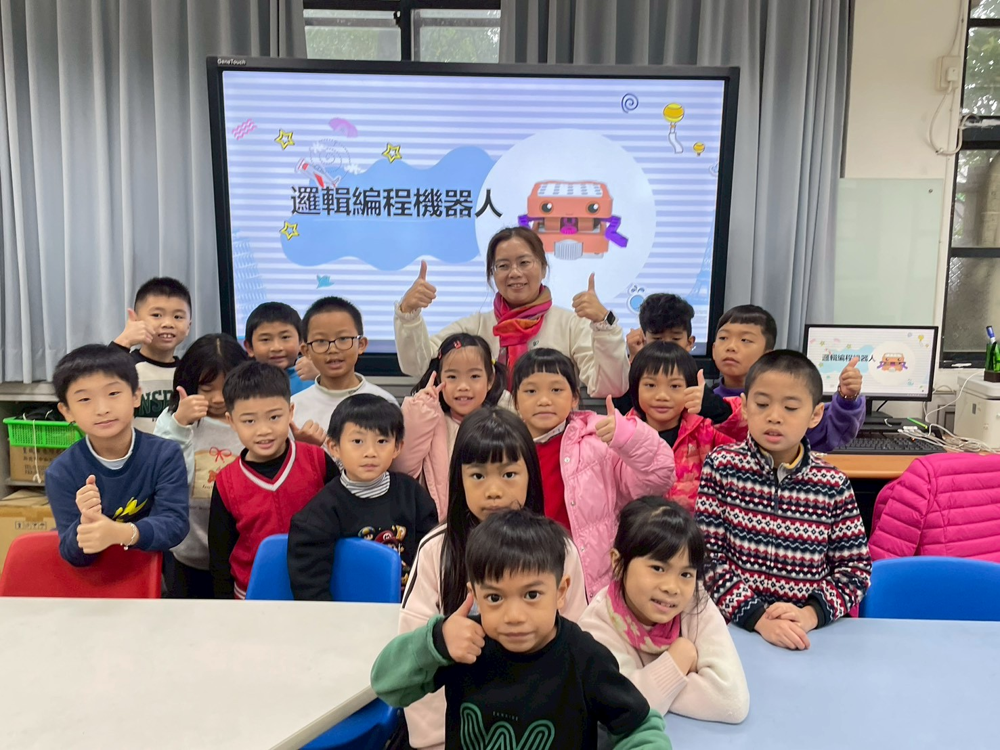
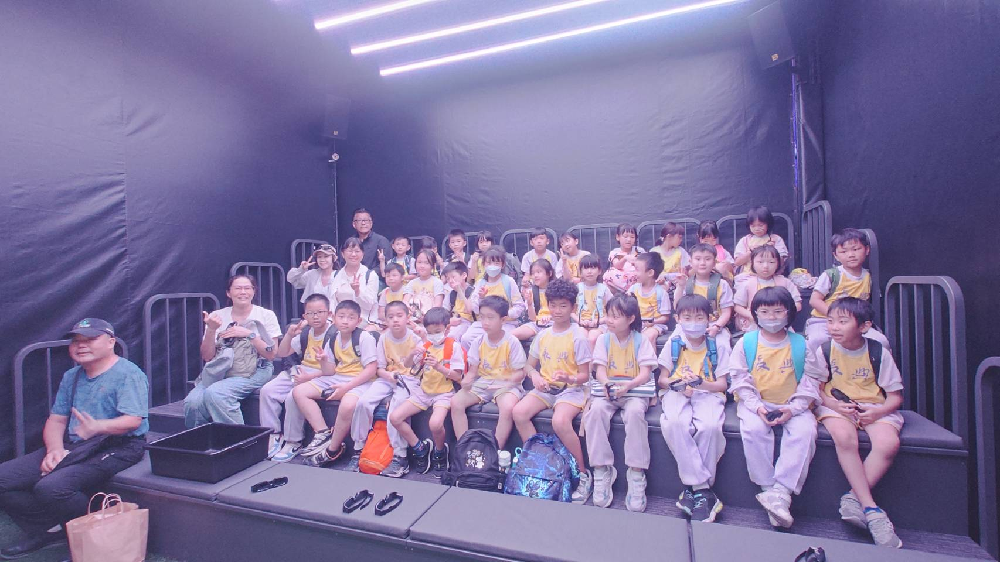

尋根家鄉鐵道
從長興國小與七堵車站的日常連結出發，認識鐵道如何形塑城市生活、產業流動與地方記憶。
Outdoor Education Vision
以「走出校園、走進歷史、走向未來」為主軸，讓學生在真實場域中理解家鄉、連結產業、練習提問，並把學習成果回饋到社區。
從長興國小與七堵車站的日常連結出發，認識鐵道如何形塑城市生活、產業流動與地方記憶。
串聯礦業、港口、捷運、海洋與歷史街區，讓學生在比較不同場域時建立時間感與系統思考。
透過學習單、導覽任務、觀察紀錄與訪談，訓練學生蒐集資料、整理重點與合作解決問題。
鼓勵孩子提出導覽設計、空間改造或友善環境提案，從認識地方進一步參與地方。
Route Map
點選地圖標記或下方路線，可以快速切換到對應分頁。路線座標為展示用，可依正式成果資料再微調站點。
Learning Routes
每個分頁整理主題、學習場域、學生任務與可連結的成果文件。
Course Design Toolkit
提供老師規劃戶外教育路線時可直接使用的架構，包含路線設計、經費估算、指標檢核與風險管理，也可銜接 Gemini Gem 進行共備。
Visual Lesson Builder
改成分步驟的教案規劃流程。老師先用熟悉的課程語言完成路線、任務、三階段活動與指標檢核，最後再產生可複製的 script.js 資料格式。
Parent Notice Generator
老師可依班級與路線快速產生家長通知單。填妥出發時間、注意事項與攜帶物品後，右側會同步預覽，最後可用瀏覽器列印功能下載 PDF。
Photo Gallery
以現有照片建立成果牆，呈現學生走讀、參訪與實作的學習現場。





